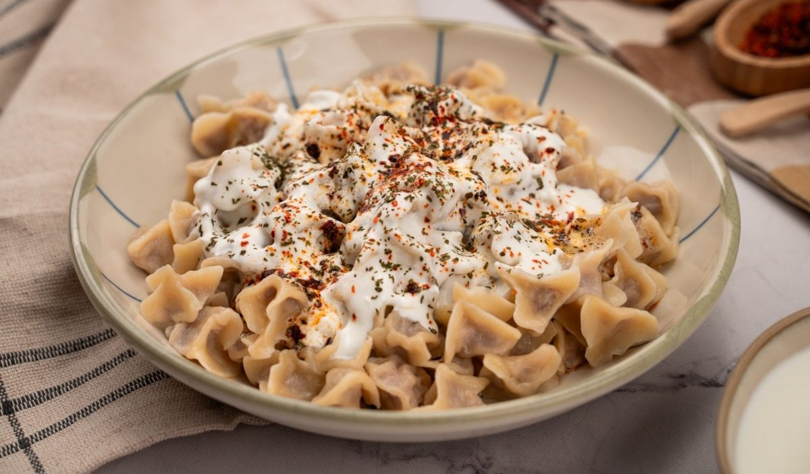
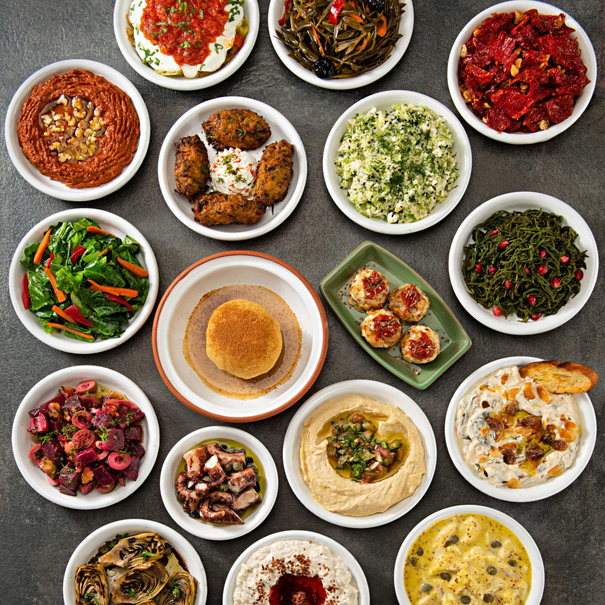
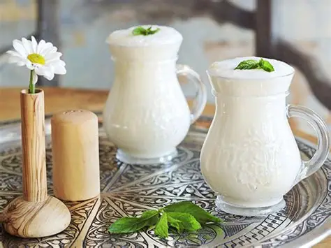

Popular Dishes

Kebabs
Turkey is famous for its wide variety of kebabs, including doner, sis, Adana, and the famous Iskender kebap thin slices of grilled meat served over pita bread with tomato sauce and yogurt.

Manti
Manti are Turkish dumplings filled with minced meat, usually lamb or beef, and served with garlic yogurt sauce and melted butter.

Meze
Meze refers to a variety of small appetizers such as stuffed grape leaves (dolma), aubergine salad, borek, and more commonly shared in Turkish dining culture.

Lahmacun
Often called “Turkish pizza,” lahmacun is a thin crispy flatbread topped with minced meat, tomatoes, onions, and spices, usually rolled with parsley and lemon.

Baklava
A rich and sweet pastry made of layers of filo dough filled with pistachios or walnuts and soaked in syrup one of Türkiye’s most famous desserts.

Kunefe
A sweet and savory dessert made with shredded kadayıf pastry and melted cheese, baked and topped with syrup and pistachios.

Ayran
A refreshing yogurt-based drink made by mixing yogurt, water, and salt — often served with grilled dishes.